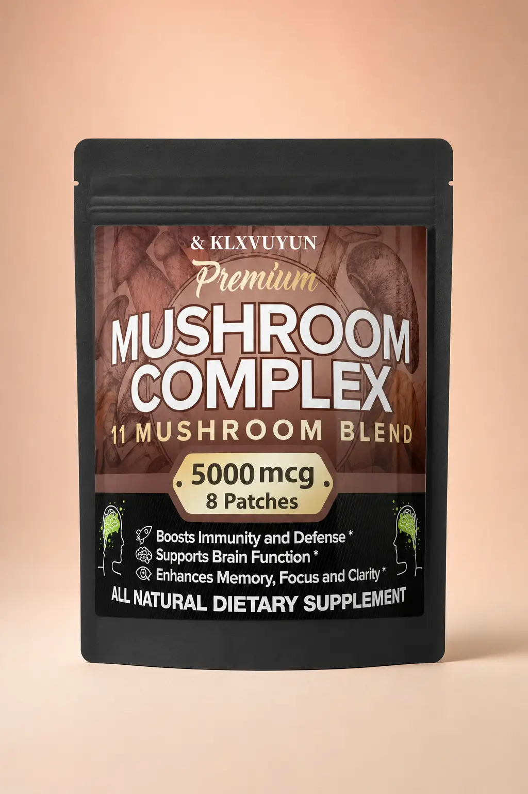
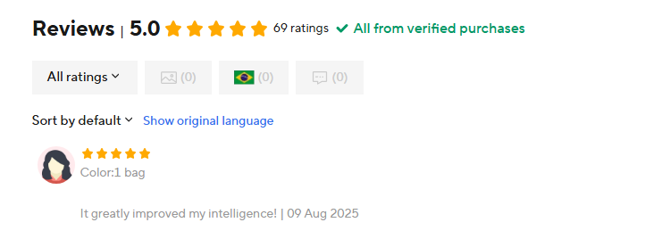

Em aberto
Identidade e origem
Fabricante legal, endereço, país de fabricação e rastreabilidade do lote.
Para quem acorda com a mente em vinte abas
Conheça o Ritual Nítido™: cinco passos simples, ancorados por um patch de complexo de cogumelos em processo de homologação, para transformar intenção em uma próxima ação clara — com um ritual que leva menos de 2 minutos para preparar.
✓ Sem cartão · sem cobrança · saia quando quiser

Mockup visual criado a partir da foto recebida. A embalagem física, a fórmula e as alegações ainda exigem confirmação documental.
Visível na embalagem: 11 blend · 5000 mcg · 8 patches
Alegado pelo fornecedor: mistura de 7 cogumelos
Ainda não comprovado: fórmula, dose, absorção e origem
Notificação, nova aba, mais uma decisão. Quando tudo pede atenção ao mesmo tempo, até começar uma tarefa pequena pode parecer pesado.
A virada de crença
O Ritual Nítido™ não tenta vencer seu dia inteiro de uma vez. Ele reduz o campo: fecha o que compete, escolhe uma ação e cria um começo visível.
“Sua mente abriu vinte abas. O ritual é o marcador que ajuda você a voltar para uma.”
O Sistema Ritual Visível™ usa o patch como uma âncora comportamental — não como prova de absorção sistêmica. A proposta é tornar o começo concreto, repetível e fácil de lembrar.
Aplique o lembrete visível conforme as instruções de segurança que serão aprovadas.
Retire da tela tudo que não pertence ao próximo bloco.
Escreva uma única ação que cabe no agora.
Proteja um bloco curto e faça apenas o primeiro movimento.
Registre o bloco concluído e redefina o próximo passo.
Limite importante: dizer que o ritual reduz decisões é diferente de afirmar que compostos de cogumelos chegam à corrente sanguínea. Essa segunda afirmação só entrará na oferta se testes do produto exato a sustentarem.
A frente diz “11 Mushroom Blend”. O anúncio do fornecedor descreve sete cogumelos. É por isso que este produto ainda não está à venda.
Sem saber se esse número vale por patch, pelo pacote inteiro ou por uma mistura específica, ele não permite concluir dose nem eficácia.

Estes nomes são pontos de verificação, não uma composição confirmada.
Antes de qualquer venda, cada afirmação precisa apontar para um documento, um teste ou um limite claramente declarado.
Fabricante legal, endereço, país de fabricação e rastreabilidade do lote.
Todos os ativos, espécies, excipientes, adesivo e possíveis alergênicos.
O que os 5000 mcg representam e a quantidade de cada ingrediente.
Certificado de análise, metais pesados, microbiologia e boas práticas.
Teste de irritação, contraindicações, tempo de uso e local de aplicação.
Evidência do produto exato para qualquer afirmação de absorção ou benefício.
Se não podemos mostrar a base, não usamos a frase para vender.
Recebemos a captura ao lado. Ela mostra uma avaliação positiva, mas não identifica de forma verificável a fórmula, o lote ou sequer se é o mesmo produto da embalagem.
Por isso ela não aparece aqui como depoimento. Avaliações futuras serão publicadas somente com vínculo ao produto homologado, compra verificada e consentimento.

Poderia repetir “absorção eficiente”, “Made in USA” e “11 cogumelos”. Mas repetir uma frase não a transforma em evidência.
Então o lançamento mudou: primeiro construímos o ritual, depois abrimos a auditoria. O produto só avança se identidade, fórmula, segurança e alegações passarem pelo Padrão Prova Aberta™.
“Não quero convencer você com uma palavra poderosa. Quero construir um argumento que sobreviva às suas perguntas.”
Você receberá as atualizações da validação, o dossiê resumido e prioridade de acesso caso o primeiro lote seja homologado.
Auditoria em linguagem claraO que foi confirmado, reprovado ou continua desconhecido.
Prioridade realConvites seguem a ordem da lista e o estoque documentado do lote.
Decisão sem pressãoEntrar não reserva compra, não gera cobrança e não obriga você a nada.
Garantia de Transparência RadicalSe a amostra não passar pelos critérios, não será lançada como se tivesse passado. Se houver venda futura, condições de garantia e devolução aparecerão antes do pagamento.
Leva menos de um minuto. Nenhum dado de pagamento é solicitado.
Escassez sem número inventado: o tamanho do primeiro lote ainda não foi definido. Quando houver estoque real, a quantidade será publicada.
Esta página é atualizada conforme a documentação avança.
Receber atualizações →Não. A amostra está em auditoria. A lista fundadora dá acesso às atualizações e prioridade caso o produto seja homologado; não é uma reserva paga.
Ainda não sabemos. A frente da embalagem diz “11 Mushroom Blend”, enquanto o anúncio do fornecedor identifica sete. A formulação completa precisa ser documentada antes de qualquer venda.
5000 mcg equivalem a 5 mg. O material disponível não informa se isso vale por patch, pelos oito patches ou por parte da mistura. Por isso o número não é tratado como dose efetiva.
Não encontramos evidência direta do produto exato que sustente essa afirmação. O ritual usa o patch somente como âncora visível enquanto absorção, composição e segurança não forem demonstradas.
Essa frase aparece no texto do fornecedor, mas ainda não foi sustentada por fabricante identificado, endereço ou documento de origem. Portanto, não é uma afirmação aprovada.
Ainda não é possível afirmar. Faltam composição do adesivo, instruções, contraindicações e testes de irritação do produto exato. Pessoas com condições de saúde, gestantes, lactantes ou quem usa medicamentos devem buscar orientação profissional antes de usar suplementos ou produtos tópicos.
Entrar na lista é gratuito e pode ser cancelado. Uma política comercial de garantia só será anunciada junto da oferta final e aparecerá antes de qualquer pagamento — nunca será presumida nesta fase.
Nesta primeira iteração técnica, não. O formulário está em modo de prévia até a ferramenta oficial de captação ser conectada e testada.
Entre na lista fundadora e veja se o Ritual Nítido™ conquista o direito de ser lançado.
Quero acompanhar a validação→ Gratuito · sem cartão · cancelamento a qualquer momento